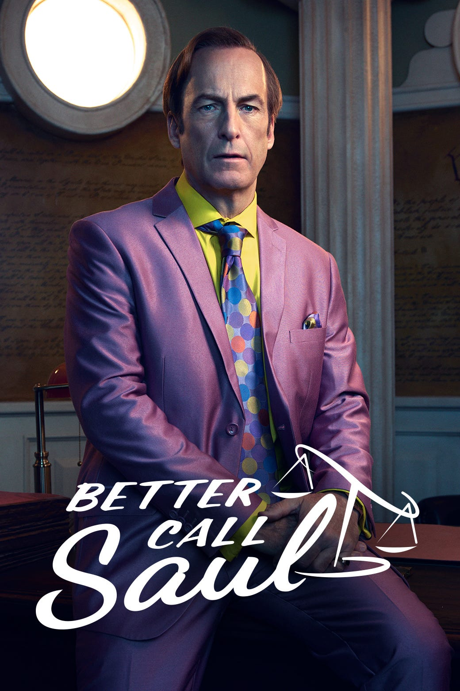
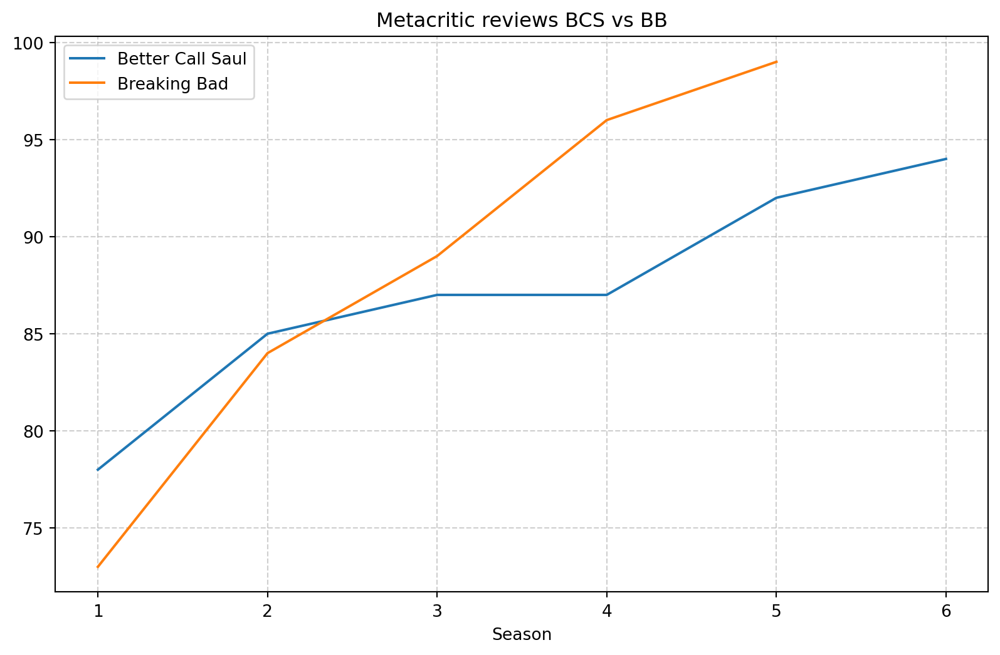
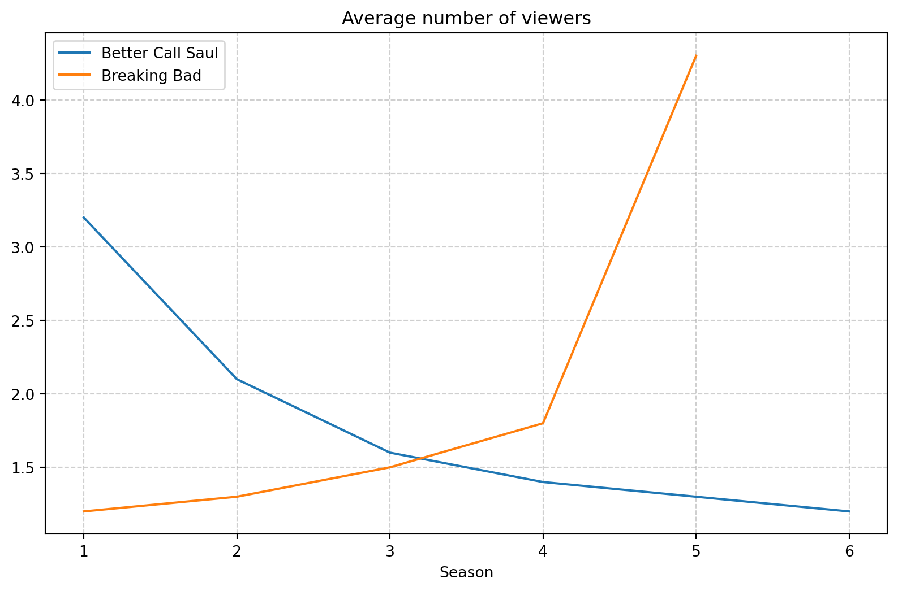

import pandas as pd
tables_bcs = pd.read_html('https://en.wikipedia.org/wiki/Better_Call_Saul')
tables_bb = pd.read_html('https://en.wikipedia.org/wiki/Breaking_Bad')Has Better Call Saul Beaten Breaking Bad?
television
drama
review
Introduction
It should be safe to assume that most of TV-shows fans are familiar with Breaking Bad world. Yet the show directed by Vince Gilligan, that started in 2008 and ended after 5 seasons in 2013 for some is considered the best show of all time. And indeed, just looking at reviews posted on IMDb service Breaking Bad is by this criteria the best show ever made. Thus it is not surprising that many fans wanted to know even more about the created world that was shown in Breaking Bad. So, two more productions relating to this franchise has been directed by Vince Gilligan - El Camino and Better Call Soul. This article however focuses only on Better Call Saul and corresponding statistics compared to the Breaking Bad. Se, let’s begin with introduction of the Better Call Saul TV-show.
“Set primarily in the early to mid-2000s in Albuquerque, New Mexico, several years before Breaking Bad, Better Call Saul examines the ethical decline of Jimmy McGill (Bob Odenkirk), an aspiring lawyer and former con artist who becomes the egocentric criminal-defense attorney Saul Goodman alongside his romantic interest and colleague Kim Wexler (Rhea Seehorn), while dealing with conflicts with his brother Chuck McGill (Michael McKean) and his law partner Howard Hamlin (Patrick Fabian). The show also follows Mike Ehrmantraut (Jonathan Banks), a former corrupt police officer who becomes a fixer and enforcer for drug traffickers, such as drug dealer Nacho Varga (Michael Mando), and drug lord Gus Fring (Giancarlo Esposito). The latter half of the show introduces cartel enforcer Lalo Salamanca (Tony Dalton), who becomes a major antagonist to both Jimmy and Mike. In addition to the primary storyline, Better Call Saul includes black-and-white flashforwards set in 2010, after the events of Breaking Bad, which explore the consequences of Saul’s actions across both series. Odenkirk, Banks, and Esposito reprise their roles from Breaking Bad, as do many others in guest appearances.”1

Numbers
Now, let’s delve into the main topic of this article, so let’s check which series, Better Call Saul or Breaking Bad is better in terms of ratings and number of viewers, and which seasons turned out to be the best considering both categories. To do that I am going to scrape the data available via wikipedia pages regarding Better Call Saul and Breaking Bad series.
Now we have all data tables from both pages loaded. We can show for example:
tables_bcs[3]| Season | Rotten Tomatoes | Metacritic | |
|---|---|---|---|
| 0 | 1 | 97% (291 reviews)[143] | 78 (43 reviews)[144] |
| 1 | 2 | 97% (182 reviews)[145] | 85 (18 reviews)[146] |
| 2 | 3 | 98% (175 reviews)[147] | 87 (18 reviews)[148] |
| 3 | 4 | 99% (185 reviews)[149] | 87 (16 reviews)[150] |
| 4 | 5 | 99% (185 reviews)[151] | 92 (16 reviews)[152] |
| 5 | 6 | 99% (182 reviews)[153] | 94 (20 reviews)[154] |
After we determine all tables that we need, we can begin with our study.
1. Reviews
As we shown above reviews tables contain data collected from Rotten Tomatoes and Metacritic. In both services ratings ranges from 0 to 100, so we can simply retrieve 2 first characters from both columns to obtain numerical ratings. As table for Breaking Bad reviews data looks similar we can do:
import matplotlib.pyplot as plt
def slice(s, start, stop):
return s.str.slice(start=start, stop=stop)
reviews_bcs = tables_bcs[3]
reviews_bb = tables_bb[2]
reviews_bcs[['Rotten Tomatoes', 'Metacritic']] = reviews_bcs[['Rotten Tomatoes', 'Metacritic']].apply(slice, args=(0, 2)).apply(pd.to_numeric)
reviews_bb[['Rotten Tomatoes', 'Metacritic']] = reviews_bb[['Rotten Tomatoes', 'Metacritic']].apply(slice, args=(0, 2)).apply(pd.to_numeric)
reviews_bcs.set_index('Season', inplace=True)
reviews_bb.set_index('Season', inplace=True)
plt.subplots(figsize=(10, 6))
plt.plot(reviews_bcs['Metacritic'], label='Better Call Saul')
plt.plot(reviews_bb['Metacritic'], label='Breaking Bad')
plt.grid(linestyle='--', alpha=0.6)
plt.legend(loc='upper left')
plt.xlabel('Season')
plt.title('Metacritic reviews BCS vs BB')
plt.show()
We can clearly see that both series have worse reviews for early seasons on Metacritic. But once the plot picked up, the reviews improved significantly. We can also see that on metacritic generally Breaking Bad has higher notes than Better Call Saul. To see it better we can easily calculate average note for both series:
Breaking Bad: 88.2
Better Call Saul: 87.17
2. Viewers
Now let’s focus on viewers by season. Again we have to appropriately prepare our dataframes and generate plots.
import warnings
warnings.filterwarnings("ignore")
viewers_bcs = tables_bcs[4][['Season', 'Avg. viewers (millions)']]
viewers_bb = tables_bb[3][['Season', 'Avg. viewers (millions)']]
viewers_bcs.columns = [col[0] for col in viewers_bcs.columns]
viewers_bb.columns = [col[0] for col in viewers_bb.columns]
viewers_bcs['Avg. viewers (millions)'] = pd.to_numeric(slice(viewers_bcs['Avg. viewers (millions)'], 0, 3))
viewers_bb['Avg. viewers (millions)'] = pd.to_numeric(slice(viewers_bb['Avg. viewers (millions)'], 0, 3))
viewers_bcs = viewers_bcs.iloc[:-1]
viewers_bb = viewers_bb.iloc[:-1]
viewers_bcs.loc[viewers_bcs.index[-1], 'Season'] = '6'
viewers_bb.loc[viewers_bb.index[-1], 'Season'] = '5'
viewers_bcs['Season'] = pd.to_numeric(viewers_bcs['Season'])
viewers_bb['Season'] = pd.to_numeric(viewers_bb['Season'])
viewers_bcs.set_index(('Season'), inplace=True)
viewers_bb.set_index(('Season'), inplace=True)
plt.subplots(figsize=(10, 6))
plt.plot(viewers_bcs['Avg. viewers (millions)'], label='Better Call Saul')
plt.plot(viewers_bb['Avg. viewers (millions)'], label='Breaking Bad')
plt.grid(linestyle='--', alpha=0.6)
plt.legend(loc='upper left')
plt.xlabel('Season')
plt.title('Average number of viewers')
plt.show()
Interestingly, the number of Better Call Saul viewers has been decreasing throughout the seasons in contrary to the Breaking Bad. However this may be because Better Call Saul is much younger series than Breaking Bad. Recap that Breaking Bad has ended in 2013 and Better Call Saul in 2022.
Footnotes
https://en.wikipedia.org/wiki/Better_Call_Saul↩︎